1. Назовите типы списков
2. Назовите устройства печати
3. Полный путь к файлу: c:\books\raskaz.txt. Назовите имя файла
4. Изменение внешнего вида документа – это _____________, а изменение внутреннего содержания текста документа – ____________.
5. Текстовые редакторы относятся к ____________ программному обеспечению
6. Ошибка ##### при записи формул в программе MS Excel означает, что ____________.
7. Графический редактор – ____________.
8. Какие из перечисленных величин являются векторными?
9. Какие из перечисленных явлений объясняются законами Ньютона?
10. Расположите последовательно этапы процесса закипания жидкости (введите последовательность цифр):
- начало образования пузырьков пара
- достижение температуры кипения
- интенсивное парообразование
- нагрев жидкости
11. Подберите соответствие процесс – определение
| Процесс | Ваш ответ (цифра) |
|---|---|
| А. Испарение | |
| Б. Плавление | |
| В. Диффузия | |
| Г. Конденсация |
12. ________________ – показывает, как быстро тело движется (путь, пройденный за единицу времени).
13. ______________ – способность тела совершать работу (бывает кинетическая и потенциальная).
14. Почему кипяток остывает быстрее тёплой воды?
15. Основные элементы проекта обучения служением:
16. Этапы работы над проектами обучения служением:
17. Расположите в правильной последовательности этапы реализации общественного проекта:
- тестирование и улучшение
- разработка и реализация
- оценка
- прототипирование
18. Соотнесите ключевые элементы отчёта и определения
| Элемент (левый столбец) | Ваш ответ — цифра из правого столбца |
|---|---|
| A — рефлексия над выполненной работой, оценка значимости проекта и его результатов, анализ успешных стратегий и проблемных ситуаций | |
| Б — вводная часть, в которой резюмируются цели проекта и его контекст | |
| В — отчет о достигнутых результатах, конкретные численные и качественные данные | |
| Г — подробное описание проекта, включая его цели, задачи, методы работы и изменения |
Правые варианты: 1 — описание проекта; 2 — анализ и оценка; 3 — результаты и достижения; 4 — введение
19. _______________ – это деятельность граждан, направленная на решение социально значимых задач на основе добровольности.
20. _______________ – сложный теоретический или практический вопрос (задача), требующий изучения, исследования, разрешения.
21. Что понимают под добровольческой деятельностью?
22. Укажите основные признаки социального проекта
1. Проект ограничен по времени.
2. Проект ограничен по ресурсам.
3. Проект ограничен по территории.
4. Уникален (такого еще не делали).
5. Конкретен (по целевой группе и результатам).
23. Как называется взаимодействие между различными социальными группами, организациями и государством, направленное на достижение общественно значимых целей?
24. Как называется проявление активности, побуждение к действию, начало чего-либо нового?
25. Группа людей, объединённых общей целью и совместно работающих над её достижением, — это ____________.
26. Как называют человека, который направляет деятельность группы и отвечает за результат?
27. Как называется процесс обмена информацией между людьми?
28. На что направлена любая деятельность, в том числе социальный проект?
29. Что является показателем достижения цели проекта?
30. Как называется процесс определения последовательности действий для достижения цели?
31. Как называется процесс анализа эффективности проделанной работы?
32. Как называется процесс осмысления человеком своих действий, чувств и результатов?
33. Что побуждает человека действовать и достигать целей?
34. Как называется замысел, план действий, направленных на достижение конкретного результата?
35. Какое качество проявляется в способности отвечать за свои действия и поступки?
36. Как называется участие граждан в общественной жизни, направленное на улучшение условий общества?
37. Укажите предложения, в которых нужно поставить ОДНУ запятую.
1) Погода была чудная (?) солнечная (?) тихая (?) с бодрящим (?) свежим воздухом.
2) Грачей пролетные стада кричат и весело (?) и важно.
3) Были и лето (?) и осень дождливы.
4) Андерсен сделал сказку интересной как для взрослых (?) так и для детей.
38. Установите соответствие между словами и частями речи.
Слово — Часть речи
А) Семиклассница
Б) Семь
В) Кто-то
Г) Утроить
39. Укажите предложение с грамматической ошибкой (нарушением синтаксической нормы). Аргументируйте свой выбор.
1) благодаря мастерства и опыта пчеловодов, удалось создать образцовую пасеку;
2) учёные преображают мир сообразно своим теориям;
3) оплату расходов берёт на себя благотворительная организация;
4) приезжие любовались причудливыми каменными узорами церкви и восхищённо рассматривали их.
40. _________ – это смысловое содержание слова, одинаково понимаемое людьми, говорящими на данном языке.
41. Чем предложение отличается от словосочетания?
42. Укажите предложения, в которых нужно поставить ОДНУ запятую.
1) Душа обязана трудиться и день (?) и ночь (?) и день (?) и ночь.
2) Я даю ему работу (?) и очень интересную.
3) Старый (?) черный (?) шелковый платок окутывал огромную шею Дикого Барина.
4) Матросы ни словом (?) ни жестом не выдали своей тревоги.
43. Укажите слова, которые являются числительными.
1) четверка; 2) четверо; 3) четыреста; 4) четыре.
44. Укажите варианты ответов, где в слове пропущена буква Ы.
1) без…мянный; 2) без…звестный; 3) пред…дущий; 4) вы…грать.
45. Установите соответствие между фразеологизмами и их значениями.
46. Определите способы образования слов и установите соответствие между столбцами таблицы.
47. Установите соответствие между стилями речи и их основными функциями.
48. Определите строку с самостоятельными частями речи.
1) Уверенно, человек, наши
2) Вот, неужели, чтобы
3) Разве, тьфу, тоже
4) Ах! Ужас! Даже
49. В предложении: «Что, дремучий лес, призадумался» – словосочетание «дремучий лес» является:
50. Найдите предложение с пунктуационной ошибкой. Аргументируйте свой выбор.
1) У клуба теснился народ, все окна его светились, звучала весёлая музыка.
2) К вечеру глухо прогремел гром, и подуло свежестью.
3) Прошли дожди – не проехать нам по болотистым дорогам.
4) В комнатах было холодно: печи не топились.
51. Раздел науки о языке, изучающий словарный состав, называется ____________________________.
52. ______________ словари разъясняют лексические значения слов, указывают переносное значение, экспрессивную характеристику.
53. «Толковый словарь живого великорусского языка» создал ______________________________________.
54. Что такое текст?
55. Что такое культура речи?
56. Какой стиль речи не является книжным и почему?
57. This is a large, luxurious house! It ___ cost a pretty penny.
58. You don’t look good, I think you ____ see a doctor.
59. Соотнесите инфинитив с Past Simple
A) freeze B) lose V) sell G) think
| А freeze | |
| Б lose | |
| В sell | |
| Г think |
60. Соотнесите прилагательное с антонимом
A) relaxed B) interested V) cheerful G) friendly
| А relaxed | |
| Б interested | |
| В cheerful | |
| Г friendly |
61. Выберите правильный вариант сравнительной степени прилагательного “hard”:
62. Дополните: _____________ is an actor.
63. Is this my hat or (you) _____________?
64. Образуйте множественное число от "fungus"
65. Переведите текст на русский (Tom)
66. Переведите текст на русский (Florida)
67. Кто из перечисленных богов относится к пантеону богов восточных славян? (выберите 3)
68. Выберите три князя, чье правление относится к Древнерусскому государству
69. Расположите в хронологической последовательности правителей России:
1) Владимир Великий; 2) Александр I; 3) Петр I; 4) Александр II.
70. Расположите в хронологическом порядке: 1) вече; 2) коллегия; 3) Боярская Дума; 4) Верховный Совет СССР.
71. __________ началась Великая Отечественная война...
72. На борту «Восток» был советский космонавт...
73. Приведите не менее трех примеров мужества и массового героизма в годы ВОВ
74. Перечислите не менее трех традиционных российских ценностей
75. К традиционным российским духовно-нравственным ценностям относятся:
76. Соотнесите термин и определение:
Термины: А. Государство, Б. Право, В. Государственность, Г. Цивилизация
Ответы: 1. Состояние общества, 2. Форма территориальной организации, 3. Этап развития общества, 4. Особый институциональный регулятор
77. Соотнесите термин и определение:
Термины: А. Гражданская идентичность, Б. Этническая идентичность, В. Конфессиональная идентичность, Г. Региональная идентичность
Ответы: 1. Процесс осознания принадлежности к этнической общности, 2. Результат отождествления себя как члена территориальной общности, 3. Осознание принадлежности к религии, 4. Чувство принадлежности к гражданской общности
78. Укажите регион, характеризующийся высокой ресурсной обеспеченностью и зависимостью:
79. Укажите способность государства воздействовать на поведение других государств:
80. _____________ – государство, которое претендует на статус государства определённой нации и понимается как таковое.
81. _____________ – политический принцип и социальное чувство, осознанная любовь, привязанность к родине, преданность ей и готовность к жертвам ради неё.
82. В каком случае Конституция РФ считается принятой всенародным голосованием?
83. Верно ли утверждение, что органы местного самоуправления не входят в систему органов государственной власти?
84. Физическая культура – это:
85. Здоровье – это (по определению ВОЗ):
86. Культура здорового и безопасного образа жизни как система включает:
87. Физические упражнения влияют на:
88. Двигательная рекреация на производстве представлена:
89. Последовательно установите физические ценности в сфере физической культуры по качественному критерию:
1) здоровье; 2) двигательные умения и навыки; 3) телосложение; 4) физические качества
90. Процедуры при закаливании водой. Расставьте по порядку:
1) обливание; 2) воздушные ванны; 3) обтирание; 4) контрастный душ
91. Соотнесите понятия физического воспитания:
А. Двигательная реабилитация, Б. Физическая подготовка, В. Физическое развитие, Г. Физические упражнения
Ответы: 1. выполнение движений для развития физических качеств, 2. процесс восстановления двигательных способностей, 3. изменение форм и функций организма, 4. развитие и совершенствование навыков для профессиональной деятельности
92. Соотнесите упражнения и последствия:
А. Корригирующие упражнения, Б. Выполнение упражнений в равновесии, В. Лечебная ходьба, Г. Терренкур
1. улучшает вестибулярный аппарат, 2. нормализует походку после травмы, 3. развивает выносливость, 4. уменьшает дефекты осанки
93. Соотнесите физические качества с определениями:
А. скоростная способность, Б. выносливость, В. двигательная активность, Г. ловкость
1. суммарное количество движений, 2. способность продолжить деятельность, 3. возможности для выполнения действий, 4. быстро овладевать движениями
94. Соотнесите мотивы с мотивацией к физической культуре:
А. Коммуникативные, Б. Творческие, В. Профессионально-ориентированные, Г. Познавательно-развивающие
1. Познать организм, 2. Занятия в группе, 3. Развитие творческой личности, 4. Развитие профессионально важных качеств
95. Соотнесите систему упражнений с оздоровительной тренировкой:
А. комплекс для реабилитации, Б. силовые упражнения, В. статические упражнения, Г. растягивание
1. Йога, 2. Пилатес, 3. Стретчинг, 4. Атлетическая гимнастика
96. Для каждой физической способности выберите упражнения:
А. силовые, Б. координационные, В. скоростные, Г. выносливость
1. акробатические упражнения, 2. бег 10–30 м, 3. прыжки через скакалку, 4. упражнения с отягощением
97. Соотнесите упражнения с развитием способностей:
А. силовые, Б. выносливость, В. координация, Г. гибкость
1. Единоборства, 2. Стретчинг, 3. упражнения с отягощением, 4. бег, ходьба, плавание
98. Смысл физической культуры как компонента культуры общества:
99. Быстрота в физической культуре:
100. Простейший комплекс ОРУ начинается с упражнения:
101. Систематические и грамотно организованные занятия укрепляют здоровье, так как:
102. Основные упражнения для развития мышц туловища:
103. _____________ – педагогический процесс, направленный на формирование здорового, физически совершенного, социально активного человека.
104. _____________ – составная часть физической культуры, основанная на использовании соревновательной деятельности.
105. ____________ – образ жизни, направленный на сохранение и укрепление здоровья.
106. ____________ – часть общей культуры человека, направленная на сохранение и укрепление своего здоровья и безопасного поведения.
107. ____________ – отдых, восстановление с использованием средств физической культуры.
108. Подсистема физического воспитания, обеспечивающая формирование свойств и качеств для профессиональной деятельности:
109. Признаками биологической смерти являются:
110. Основными последствиями крупных гидродинамических аварий являются:
111. Какие специальные мероприятия включает организация защиты населения от ЧС техногенного характера?
112. Расположите в правильной последовательности действия при отравлении алкоголем:
1) обеспечить приток свежего воздуха; 2) вызвать скорую помощь; 3) повернуть больного на бок, промыть желудок, положить на голову холод; 4) обильно поить жидкостью, укрыть одеялом
113. Последовательность оказания первой медицинской помощи при открытых переломах:
1) наложить стерильную повязку; 2) провести иммобилизацию; 3) остановить кровотечение; 4) доставить пострадавшего в лечебное учреждение
114. Правильная последовательность мероприятий при оказании первой помощи лицами без медицинской подготовки:
1) определение наличия признаков жизни; 2) оценка обстановки и обеспечение безопасных условий; 3) вызов скорой помощи; 4) обзорный осмотр и временная остановка кровотечения
115. Соответствие степени силы землетрясения и оценке в баллах:
А – Сильная катастрофа; Б – Опустошительное; В – Очень слабое; Г – Умеренное
116. Соответствие приборов и измеряемых величин:
А – Шумомер; Б – Люксметр; В – Психрометр; Г – Анемометр
117. Соответствие видов шума и источников:
А – механический; Б – аэро(гидро)динамический; В – термический; Г – взрывной
118. Гигантские волны, возникающие на поверхности океана в результате сильных подводных землетрясений, называются:
119. Организованный вывоз населения пешим порядком из городов называется:
120. Распространение инфекционных заболеваний на территории страны, нескольких стран или континентов называется:
121. Действия при проникновении в квартиру постороннего:
122. Действия при грозе на природе:
123. Действия преподавателя при тревоге о террористическом акте:
124. Как трактуется понятие «коррупция» согласно ФЗ от 25 декабря 2008 года «О противодействии коррупции»?
125. Кто может быть привлечен к уголовной ответственности за совершение коррупционных преступлений?
126. В каких ситуациях лицо, которое дало взятку, освобождается от уголовной ответственности?
127. Меры по профилактике коррупции:
128. Основные принципы противодействия коррупции:
129. Расположите наказания за коррупционные преступления по степени жесткости (от менее жесткого к более жесткому):
А – Мягкое; Б – Среднее; В – Жесткое; Г – Самое жесткое
130. Соотнесите виды юридической ответственности с примерами правонарушений:
А – Дисциплинарная; Б – Административная; В – Гражданско-правовая; Г – Уголовная
131. Определите виды юридической ответственности по примерам взыскания:
А – Дисциплинарная; Б – Административная; В – Гражданско-правовая; Г – Уголовная
132. Соотнесите определение ответственности с видом:
А – причинение материального или морального ущерба; Б – форма ответственности за преступления, связанные с коррупцией; В – действие или бездействие, нарушающее закон; Г – правонарушение, обладающее признаками коррупции, но не преступление
133. Государственные органы реализуют направления деятельности по повышению эффективности противодействия коррупции. Соотнесите органы с компетенцией:
А – Прокуратура РФ; Б – Национальный антикоррупционный комитет; В – Президент РФ; Г – Счетная палата РФ
134. Рассмотрите признаки коррупции на примере должностного преступления (ст. 290 УК РФ). Какое действие НЕ относится к коррупционным?
135. Какая мера является профилактикой коррупции?
136. Кем определяются основные направления государственной политики в области противодействия коррупции?
137. Чем может быть ограничено право физического лица занимать определенные должности за коррупционные правонарушения?
138. Наиболее распространенный пример коррупции:
139. Дайте определение коррупции:
140. Кто выступает субъектом коррупционных правонарушений?
141. Определение государственной антикоррупционной политики:
142. Понятие «противодействие коррупции»:
143. Экстремизм – это:
144. Назовите принципы противодействия коррупции в РФ:
145. Виды юридической ответственности за коррупцию:
146. Специфические виды коррупции:
147. Причины коррупции:
148. Определение терроризма и его основные признаки:
149. В каких состояниях может находиться вещество? (Выберите все правильные ответы)
150. Заполните пропуск: _____________ – изменение скорости тела за единицу времени (увеличивается или уменьшается).
151
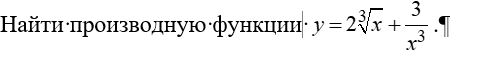
Правильный ответ:
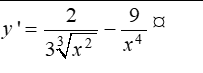
152. Выберите все верные утверждения:
Инструкция: Прочитайте текст и выберите все правильные ответы.
Правильный ответ: 1, 2, 4
153. Определите поведение ряда по изображению
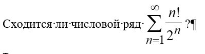
Правильный ответ: расходится.
Подсказка: ряд имеет члены, не стремящиеся к нулю — это условие расходимости.
154. Выберите все верные утверждения:

154
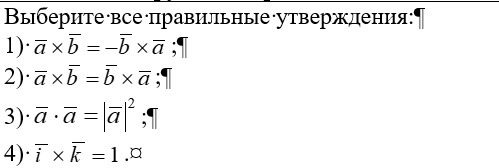
Правильный ответ:

С помощью диаграмм Эйлера-Венна можно графически изобразить основные операции над множествами. Соотнесите диаграмму Эйлера-Венна и операцию над множествами. К каждой позиции, данной в левом столбце, подберите соответствующую позицию из правого столбца:
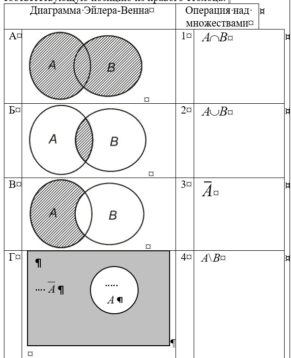
157. Порядок выступления 7 участников конкурса определяется жребием. Сколько различных вариантов жеребьевки при этом возможно?
158. Совокупность элементов квадратной матрицы, расположенных на отрезке, соединяющим левый верхний угол с правым нижним, называют _____________.
159. К каждой позиции, данной в левом столбце, подберите соответствующую позицию из правого столбца:
| Свойство | Название (цифра) |
|---|---|
| А. Квадратичная форма является отрицательно определенной тогда и только тогда, когда | |
| Б. Квадратичная форма является положительно определенной тогда и только тогда, когда | |
| В. Квадратичная форма является неопределенной, если | |
| Г. Квадратичная форма является вырожденной, если |
160. Из предложенных выберите множество с операцией, образующее группу:

Правильный ответ: 2, так как операция «сложение» ассоциативна, есть нейтральный элемент e = 0 и каждый элемент имеет обратный.
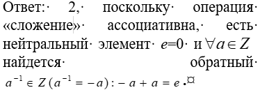
161. Совокупность элементов квадратной матрицы, расположенных на отрезке, соединяющем левый верхний угол с правым нижним, называют:
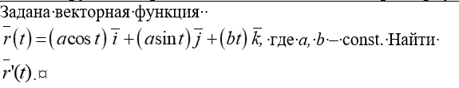
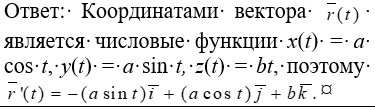
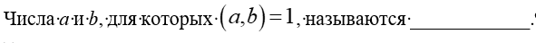

163. Выберите правильные варианты ответа:
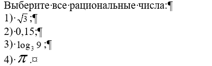
Подсказка: Верные ответы — это 2 и 3.

164. Сопоставьте элементы:
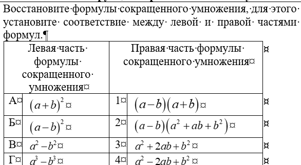
| Свойство | Соответствие |
|---|---|
| А | |
| Б | |
| В | |
| Г |
Подсказка: Правильная последовательность — А3, Б4, В1, Г2.
165. Произведение корней приведенного квадратного уравнения равно:

Подсказка: Произведение корней квадратного уравнения ax² + bx + c = 0 равно свободному члену c (при a=1).

167. Вопрос по изображению:
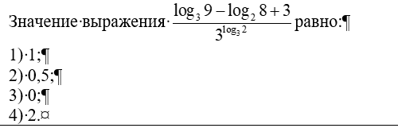
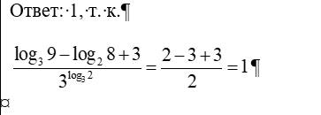
166. Вопрос по изображению:
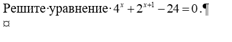
Правильный ответ:
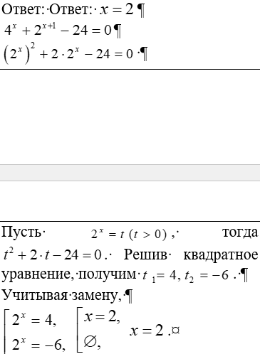
171. Компьютеры, построенные на этих принципах, относятся к типу фон-неймановских. Назовите эти принципы:
172. Какие программы относятся к антивирусным?
173. Расположите в правильной последовательности основные действия по перемещению фрагмента текста в MS Word:
| А | Курсор в место вставки | |
| Б | Вставить из буфера обмена | |
| В | Вырезать в буфер обмена | |
| Г | Выделить фрагмент текста |
174. Укажите в каком из файлов хранится текстовая информация:
175. Программа или данные, хранящиеся в памяти компьютера и имеющие имя и расширение – _____________.
176. В каких файлах хранятся Web-документы?
177. Назовите способы ввода текста в слайды PowerPoint:
178. Назовите операционные системы:
179. Выберите действия, относящиеся к форматированию документа:
180. Расположите в правильной последовательности действия по копированию содержимого ячейки в MSExcel:
| А | Курсор в ячейку, куда вставить | |
| Б | Скопировать содержимое ячейки | |
| В | Вставить из буфера обмена | |
| Г | Выделить ячейку |
181. Расположите в правильной последовательности действия по созданию автоматического оглавления в MS Word:
| А | Курсор в место вставки оглавления | |
| Б | Команда Ссылки / Оглавление / Настраиваемое оглавление | |
| В | Отформатировать оглавление | |
| Г | Назначить всем заголовкам стили |
182. Что можно изменять в оформлении списков текстового документа Word?
183. Расширение файла указывает на …
184. _____________ – это совокупность средств и методов сбора, обработки и передачи данных (первичной информации) для получения информации нового качества о состоянии объекта, процесса или явления (информационного продукта).
185. Операционные системы входят в состав _____________ программного обеспечения.
186. Файл, содержащий в себе один или несколько других файлов и/или папок в сжатом или несжатом виде называется _____________.
187. Фрагмент текста, заканчивающийся нажатием клавиши ENTER, называется _____________.
188. Несколько смежных ячеек Листа таблицы Excel образуют _____________.
189. _____________ – это язык разметки, который используется для создания и структурирования веб-страниц, иначе называется – язык _____________ разметки.
190. В формуле =D8 программы Excel преобразуйте относительную ссылку в смешанную.
191. Выберите методы решения нестандартных задач:
192. При решении задач с прогрессиями используются:
193. Установите последовательность решения системы уравнений методом подстановки:
194. При решении иррациональных, логарифмических неравенств необходимо учитывать область определения входящих функции, в результате получаем равносильные системы и совокупности неравенств. Соотнесите неравенства и равносильные решения:

195. Установите соответствие между подходом решения задач с прогрессиями и их описанием:

196. Из 25 учеников в классе 17 изучают английский язык, а 15 – французский. Сколько детей изучают оба языка?


201. К каждой позиции, данной в левом столбце, подберите соответствующую позицию из правого столбца:
| Наименование | Выбор |
|---|---|
| А. Конъюнкция | |
| Б. Эквиваленция | |
| В. Импликация | |
| Г. Штрих Шеффера |